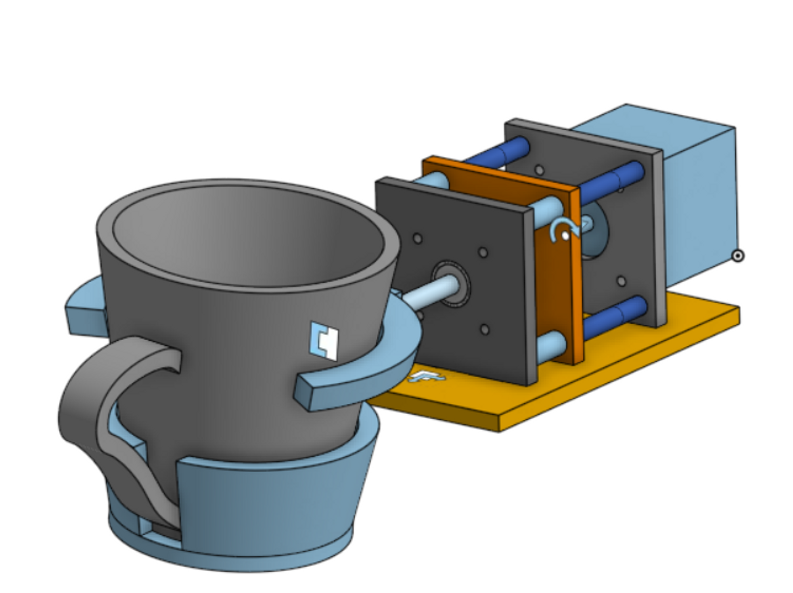

Mechanical Design Process
Introduction
In order to create a machine that could create latte art, we first had to study the motions that a barista would use. We found that there were four main categories of movement necessary to create latte art. The first is obvious - the back and forth motions in the plane parallel to the art which are the basis of the pattern. We replicated this movement using an x-y gantry system. The next motion is an up and down movement (along the z axis). This allows the barista to control the force with which the milk hits the surface of the drink, which determines whether the milk sits on top of the art or if it penetrates through. We replicated this movement using a lead screw mechanism. The third motion is the tilt of the cup. This motion is used for various purposes - sometimes to bring the milk spout closer to the surface of the art, sometimes to vary the force of the milk, sometimes to increase the final size of the art. Although the effect of this was initially unclear to us, we chose to design a mechanism to replicate the tilt. The final motion was the release of liquid from the milk jug. While a barista would simply tilt their jug, to replicate this we used a solenoid valve and a tube. This final motion required a good deal of troubleshooting and experimentation to get the proper flow rate, but we hoped that with these four mechanisms, we would be able to create latte art.
The Gantry
Our first step in the mechanical process was to design a gantry system. Much of our initial design process revolved around a 3D printer that we took apart for materials (Figure 1). This printer also had a three axis gantry. Two axes of motion were focused on the cup - the x direction and the z direction. The extruder only moved in the y direction. We chose to modify this design so that all three axes were focused on our extruder, as we were worried that excessive cup motion would result in sloshing and spilling.
Using the belts, pulleys, rails, bearings, and stepper motors from the 3D printer, we designed our first iteration of the gantry system. This first iteration had all three axes controlled by belt and pulley systems. The y axis was bolted onto our extrusion structure and had two plates. The first plate had a stepper motor that controlled the motion, along with the linear bearing and rails, while the other side only had the bearing and rails to guide the motion. The plate for the x axis was bolted onto the bearings, so that it was perpendicular to the y axis. This had the same setup as the y-axis. The z axis plate was also very similar to the x plate, and it bolted on the bearing on the x-axis plate. The extruder is attached to the bearing on the z plate. This iteration was lacking several important pieces - limit switches, hard stops for the rails, mounting spots for the plates, and room for everything to operate smoothly - but it allowed us to get a rough sense of what the gantry would look like.
For our second iteration, we made several big changes. First, we decided to add a second stepper to the y-axis in order to support the weight of the extruder system and to keep it moving symmetrically. Secondly, we decided to completely redesign our z-axis by changing it from a belt-and-pulley system to a lead-screw mechanism in order to make designing the e-stop easier for our software team. The stepper motors go slack when power is cut to them, which means that they no longer exert any torque on a belt-and-pulley system. This was fine for belt-and-pulley systems that have gravity acting perpendicular to the belt (such as our y- and x- axes), but for our z-axis, gravity would pull the extruder down to its lowest position, which would be unideal for a situation where the e-stop was required. We took a stepper motor, lead screw, and guiding rails from a different 3d printer, and designed new plates and cut down the screw and rails so it would fit in our system, then mounted these to a baseplate to support them. We also made several smaller changes to our gantry, such as rounding off the corners of the plates, changing the placement of the motors and rails to avoid interference, and adding mounting points for the linear bearings.
The Extrusion System
Our extrusion system had several moving parts, each of which needed to be purchased and/or manufactured according to rigorous standards. Since hot water and milk would be running through the extrusion system, the system needed to be food-safe and heat-safe. This ruled out many common materials, such as brass and many plastics. We also needed to avoid compromising the state of steamed milk in order to create the best possible latte art. This meant that we were unable to use any pumps to move the milk, and the system had to be entirely gravity-fed. On top of all of this, we had to make sure that the weight of the liquid was resting on the extrusion structure rather than any of the moving parts.
We began by looking for a valve that met our needs: food-safe, solenoid-powered (to stop liquid extrusion entirely when power is cut), ½” diameter, 12V available voltage, light enough to be moved by our stepper motor, and cost-effective. We finally settled on the ½” Plastic Zero Differential Solenoid Valve, which satisfied all of our requirements, although it was significantly heavier than we had hoped.
Next, we needed a way to direct the flow of milk into the valve. We decided to use a funnel and nylon tubing. In order to allow gravity to direct the flow of milk, we mounted the funnel at the top of a long piece of extrusion, and connected a piece of tubing from the end of the funnel to the top of the valve. We were careful to make the tube just long enough to connect these two, in order to limit the pressure drop through the tube and have the most pressure at the inlet of the valve. At this stage, we also manufactured a ½” stainless steel nozzle for the valve in order to better direct the flow of milk.
After we manufactured this system and began testing it, we realized that a) the flow of milk was turbulent and lacked direction, and b) the volumetric flow rate was much too great, and the milk would penetrate the surface tension of the art. We took several steps to correct this. The first was to lathe a new nozzle with the same general design but with a diameter of ¼”. In order to decrease the flow rate of the milk, we attempted to decrease the velocity of the milk through the tubing. Although we tested several methods to achieve this, we finally settled on using a slightly longer tube so some of the milk’s energy was put into traveling through the tube, rather than accelerating.
The Tilt Mechanism
The design of the tilt mechanism is relatively simple. We used a stepper motor to control the tilt which we connected to a ¼ in aluminum shaft using a 3d printed coupling. The weight of the cup is supported by bearings which are mounted into an acrylic laser cut structure. The whole mechanism is attached to the 1010 extrusion using 2 1/4 20 bolts. The cup holder is designed specifically to mold to the ceramic cups we chose for our project. They easily slide in, are constrained to z tilt by a handle cutout and are supported while rotating. Since the center of rotation is above the COM of the cup it is a stable system and goes to 90 degrees when the motor is disabled. The cup holder is attached to the shaft using 3 heat set inserts and bolts as set screws.
Electrical Mounting
Although we had several electrical pieces that needed to be mounted, the most important pieces were the limit switches. In order for the limit switches to function properly and allow us to zero the three axes, they needed to be placed in several different orientations around our machine. We chose to design several different bracket configurations to hold them in place against the plates.